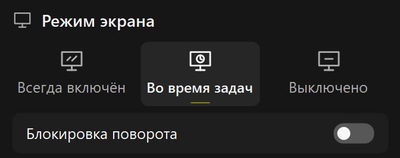
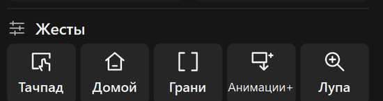
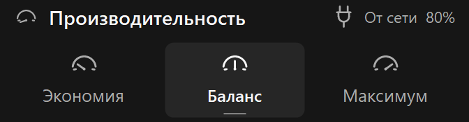
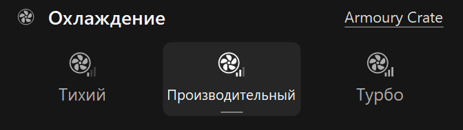
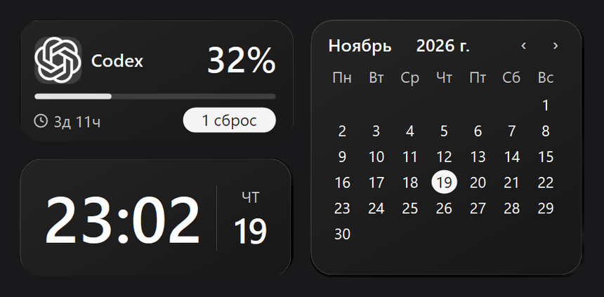
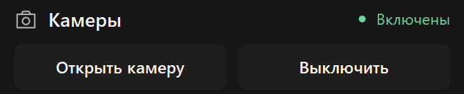
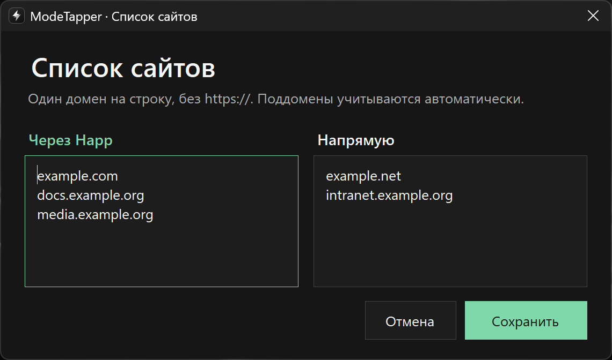
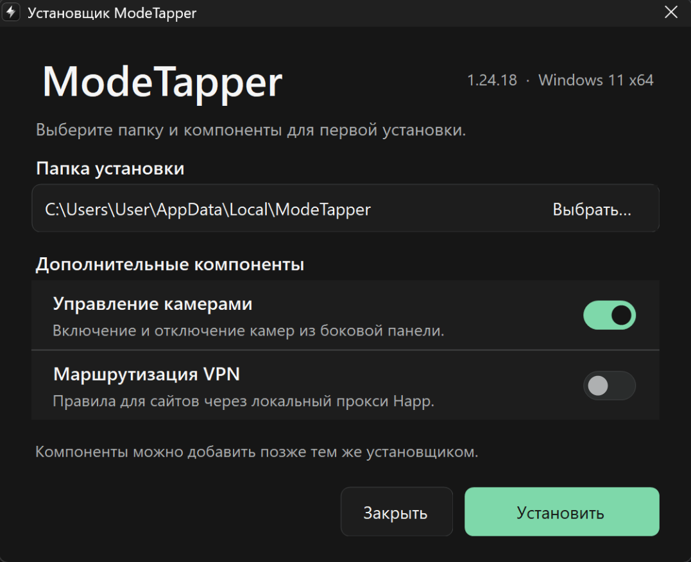

Режим экрана
«Всегда включён» удерживает дисплей активным. «Во время задач» держит его включённым, пока выполняется задача Codex. «Выключено» возвращает таймеры Windows.
ASUS ROG Flow Z13 (2025) · GZ302EA
Окна под пальцами.
Настройки под рукой.
Открывайте карусель боковой кнопкой, меняйте яркость свайпом и переключайте охлаждение прямо в боковой панели.
Windows 11 x64 · Последний релиз и SHA‑256
Карусель открывается поверх приложений, лупа увеличивает участок экрана, а «Анимации+» добавляют переходы между ярлыком и окном.
Пролистайте карточки, смахните ненужное окно вверх и нажмите на нужную карточку, чтобы вернуться к приложению.
Увеличьте мелкий текст или участок интерфейса. Для фотографий есть отдельные жесты масштабирования.
Поддерживаемое окно раскрывается из ярлыка, если ModeTapper определил его положение. Переходы также работают при сворачивании и закрытии.
Выберите тачпад или сенсорный экран, чтобы узнать, с какого края начать жест.

Профиль питания Windows и режим вентиляторов ASUS переключаются независимо.

«Всегда включён» удерживает дисплей активным. «Во время задач» держит его включённым, пока выполняется задача Codex. «Выключено» возвращает таймеры Windows.

Экономия полезна на батарее. Баланс даёт больше производительности от сети. Максимум можно использовать для тяжёлых задач и от сети, и от батареи.

Тихий режим для чтения, производительный для длительной нагрузки, турбо при подключённом питании, если он доступен на устройстве.

Настройте часы, календарь, лимит и задачи Codex. Активный чат можно открыть прямо из виджета.

Откройте камеру или отключите устройства из панели. Компонент можно добавить в установщике.

Укажите, какие домены открывать через локальный прокси Happ, а какие направлять напрямую.

Боковая кнопка и охлаждение проверены на ASUS ROG Flow Z13 (2025, GZ302EA) с ASUS System Control Interface v3. На других устройствах с Windows 11 набор функций зависит от оборудования. Для жестов тачпада нужен совместимый Precision Touchpad, а для краевых жестов экрана нужна поддержка планшетного положения Windows.
Руководство и ответы на вопросы